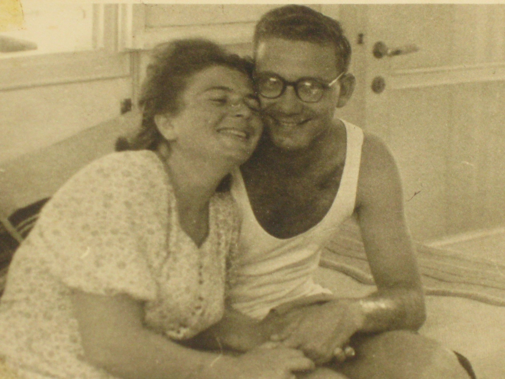
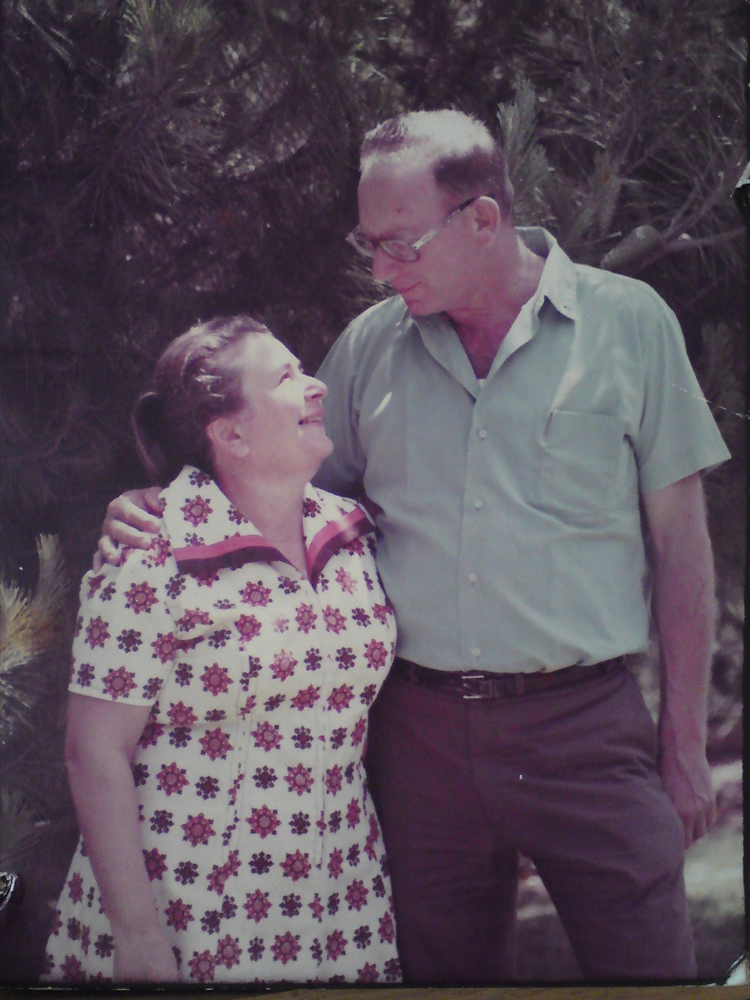
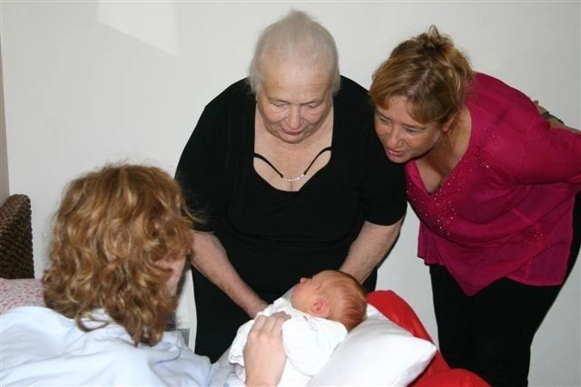
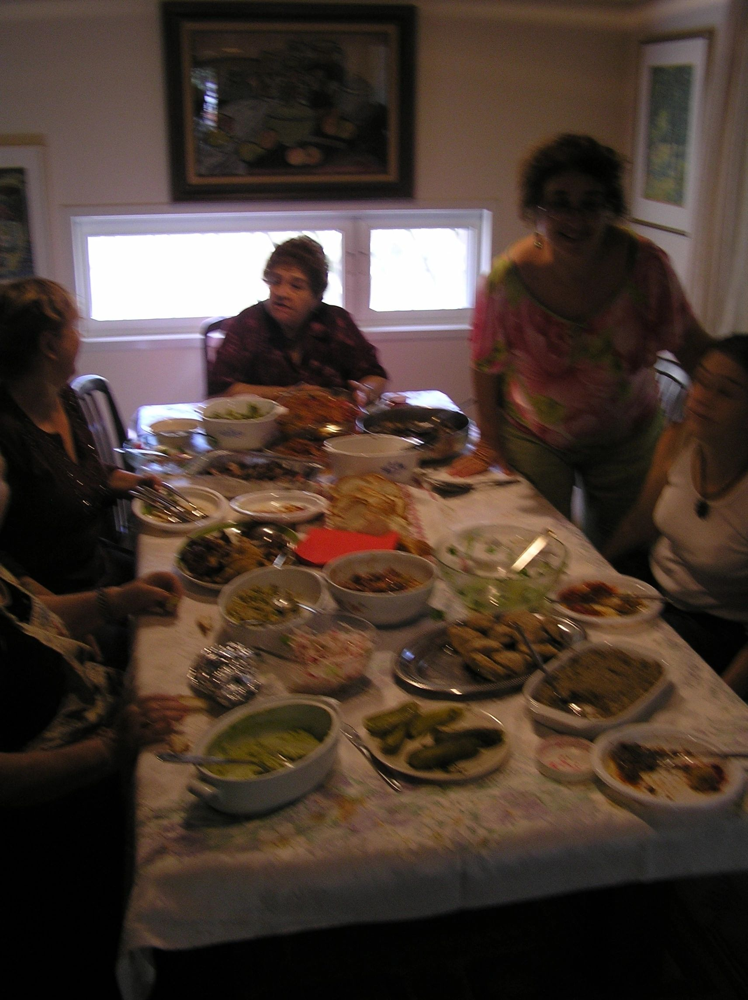
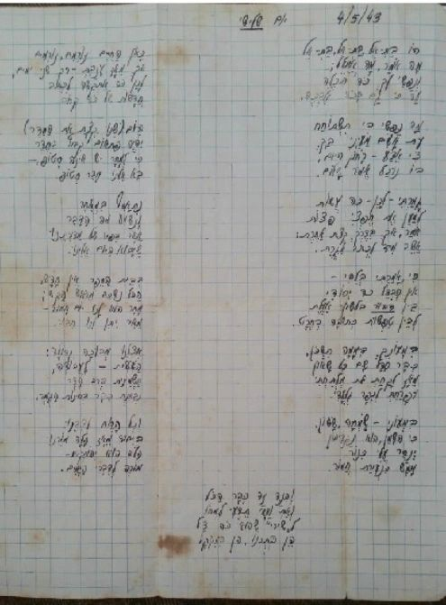

Wife and Family
Marriage
Efraim and Batel Talmon were married for over sixty years, and knew each other since age 14. Here are some photos of Batel and Efraim together.


Batel had passed away recently, at a ripe old age. A memorial site for her will be uploaded soon.
Family
Efraim and Batel had three children (two daughters and a son), eight grandchildren, and four great-grandchildren. For over 30 years, the extended family would meet (practically) every Friday night – with Batel cooking most of the food, Efraim doing most of the legwork (deliveries, shopping, etc.). Naturally, festive meals were also made on holidays.
Numerous special occasions were celebrated in their house, as well – with food being prepared, in some cases, for literally hundreds of people. These included children's (and grandchildren's) bar Mitzvahs, weddings, and more.
The result of these 30+ years? That the family, including all the grandchildren, know each other much better than most other extended families, and keep in touch more. This web site – a collaborative effort of all the grandchildren – is a (small) proof.
This is not the place for the children and grandchildren's biography. For now, a couple of photos will have to do; for some go here.


Recently, one of Efraim's granddaughters found a “love letter” (actually, more of a humorous “how are things at home and school” letter) from Efraim to Batel, then his girlfriend. It is – typically of Efraim – funny, in excellent Hebrew, and quite informative:
